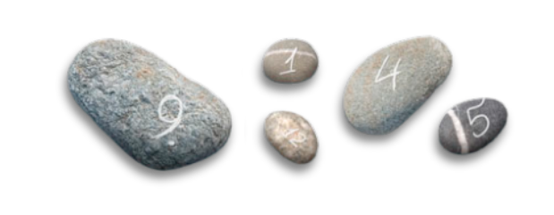

The Recovery edition — fully rebuilt for 2026
Begin again
one day at a time.

The hours between meetings are where recovery is really lived, and where it gets hardest. Remindfulness Recovery runs quietly in the background and sends gentle reminders through your day: a slogan when you need one, a moment of conscious contact with your higher power, a breath, a gratitude, a reason to keep coming back.
These reminders speak the language of the rooms and honor recovery as the deeply spiritual path it is, whatever your higher power looks like and whatever your program may be. Nothing here belongs to any denomination or organization; everything here belongs to the day you're in right now. Content by guest‑developer Derek Sheppard, with dozens of new reminders added in the 2026 rebuild, from grounding practices to self‑compassion, now over 100 in all.
Make it yours
Choose your alert sound, or none. Choose random timing and how many reminders you'd like, or a regular interval. Suspend the app while you sleep and it wakes with you. Write your own reminders, your sponsor's words, your daily readings, and now import a whole list at once, and back everything up with a tap.
Alert sounds, from serene to smile‑raising
- Ahhh
- Andean Flute
- Aum Chant
- Baby Laugh
- Brilliant
- Canned Laughter
- Chakra Wash
- Goof Bell
- Hello and Welcome
- Horsey
- Moo
- My Relatives
- Ocean Birds
- Ohmygoodness
- Oingy Boingy
- Party Whistle
- Pixie
- Reveille
- Rover
- See That Coming
- Shudder Love
- Slap Pop
- That's Right
- Twango
- Zap Loony
In the spirit of the fellowship, which has always known that laughter is medicine, a few of these may well make you smile.
A note on notifications
For the best experience, allow notifications when the app asks. If you'd like reminders to stay on screen until you've seen them, go to Settings > Notifications > Remindfulness Recovery and choose the Persistent banner style. Opening a reminder from time to time also tells iOS you're using them, which keeps them flowing.
About the images in the app
The stones on the Home screen are the stepping stones of the 12 steps. The buds on the Customize screen symbolize new life. The images of the Settings screen mean "take it slow, one day at a time", and June 10th on the calendar page is the day Dr. Bob took his last drink. The candles on the About screen refer to the tradition of celebrating years in recovery with a "birthday". On the Reminders List screen, the compass symbolizes a new direction while the chips refer to the tokens given out at milestones in recovery. The glasses on the Reminder screen are a metaphor for the new way of seeing life that recovery offers.
This app walks beside your recovery; it does not replace your program, your fellowship, or professional support. May it help you stay connected throughout the day, one day at a time.